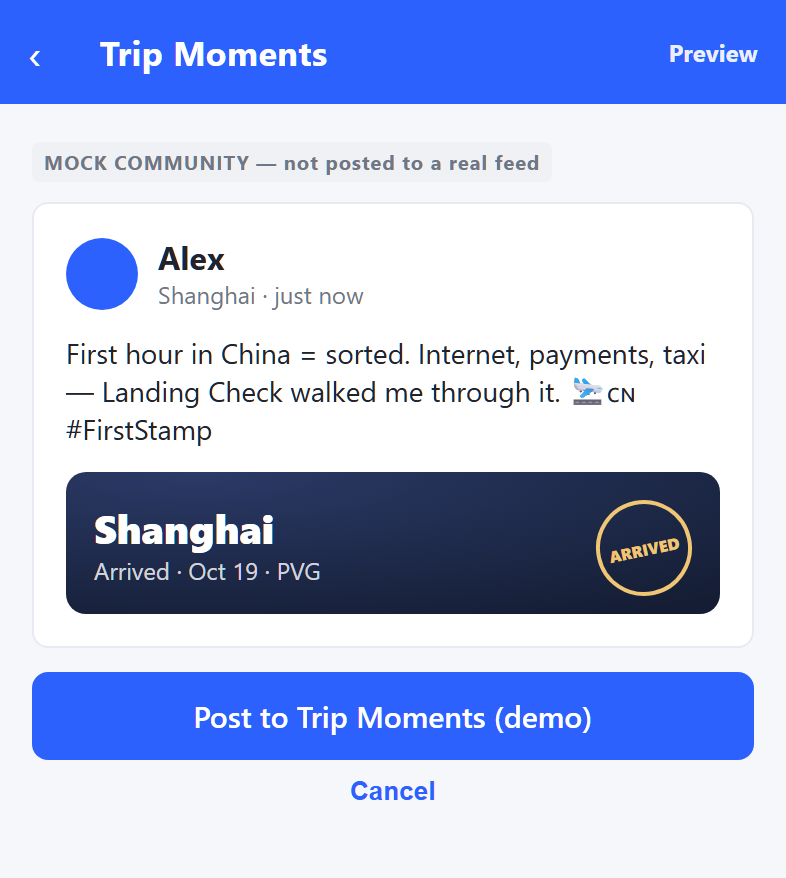
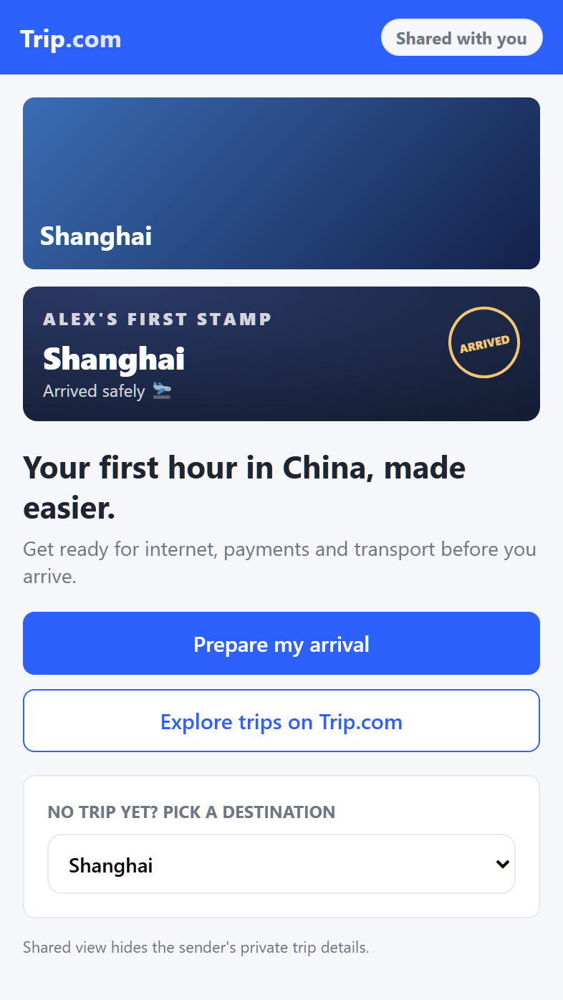
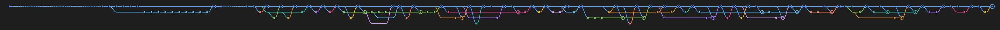

L✓Landing Check
第一次来中国，
落地后该做什么？
在正确的时刻，给出正确的下一步——把行前准备、落地联网、支付和前往酒店，放进 Trip.com。
扫码体验 Landing Check
yuklim.github.io/landing-check/h5 · 向导模式
可以一边听讲解，一边扫码走完整个流程。
引入
Landing Check · 落地中国的第一小时
01 / 落地瞬间 THE MOMENT
落地那一刻，最需要的是下一步
首次来华自由行游客 · 浦东机场落地第一程
准备不确定：网络、支付是否到位，心里没底。
→
出发前，确认准备。
现场选择难：联网、支付、交通相互关联，不知先做什么。
→
落地后，明确下一步。
遇阻难继续：看不懂提示，常规方法失败后还要重新找答案。
→
卡住时，有指引和备用办法。
核心判断：下一步，该怎么做？
01 / 落地瞬间 · 数据分析 · 需求挖掘
海外旅客到底在聊什么、卡在哪
89.6万官方 Trip.com 英文游记
9.7万筛出涉华讨论
14.9万提取的需求句
3,907真实问题帖
数据来源：内部数据 · 2025-10 ～ 2026-10
01 / 落地瞬间 · 需求证据
海外社区里的真实原声
来自 YouTube / Instagram 等公开帖的真实提问与吐槽——与上面的量化统计相互独立，让数字背后有具体的人。
02 / 产品方案 OUR SOLUTION
在正确的时刻，
给出正确的下一步。
One Moment. One Next Step.
面向 Trip.com 来华自由行游客的入境游 AI 落地助手，聚焦落地后的「第一小时」。不是再给你一堆建议，而是把联网 · 支付 · 交通拆成可逐步完成的任务，带你一步步做完。
一般旅行 AI给一堆建议，剩下的你自己做
Landing Check拆成一个个「下一步」，陪你做完、卡住兜底
准备 · 指引 · 兜底 —— 一次只给一个下一步
01 / PREPARE
出发前，检查好准备
行前清单确认 eSIM、支付、机场到酒店交通是否就绪；没完成的直接给操作指引。
02 / GUIDE
落地后，一步步带你走
结合准备情况与航班、酒店信息，每次只给一个当前任务：先联网、再支付、再选交通。
03 / RECOVER
遇到问题，告诉你怎么解决
Wi-Fi、支付、看不懂中文，都能用 I'm Stuck 拍照上传，AI 给图文教程和备用方案。
03 / 落地体验 · 需求 → 功能
挖掘到的高频需求，正是我们一件件解决的
门票与预约38.4%
市内交通与打车38.1%
支付16.6%
落地与机场13.1%
上网与通讯7.5%
换汇与花费6.9%
签证与入境6.2%
城际交通5.7%
语言与翻译4.6%
安全与骗局3.4%
App 与实名2.8%
健康与如厕2.7%
住宿与登记2.0%
我们覆盖的 5 大需求
长尾需求
统计Trip.com 官方英文游记 89.6 万篇 → 涉华 9.7 万 → 含具体需求 2.2 万篇（n = 22,354）
方法需求词典分类；占比 = 提到该类的帖子 ÷ 2.2 万篇，一帖可计入多类
来源内部数据 · 2025-10 ～ 2026-10
04 / 技术难点 BEHIND THE PRODUCT
每一个「下一步」，都有据可依
01
需求挖掘
不依赖大模型 · 全量可复现
89.6万英文游记
9.7万涉华讨论
2.2万含具体需求
13 类需求排序
传统 NLP：词典分类 + TF-IDF / NMF 聚类，bootstrap 给出置信区间，区分「讨论热度」和「真实痛点」。
02
规则驱动
一次只给一个任务
落地 23:402 件行李同行 1 人酒店距地铁 600 m天气 晴
→
推荐出租车地铁已停运
不把待办一次摆出：顺序随准备状态、行程和交通条件实时调整，深夜地铁停运时直接推荐出租车。
03
AI 排障 · 知识库
AI 不自己编答案
截图 / 描述→AI 识别情境→知识库条目→步骤 + 备用办法
✓ 每条知识都有来源和核验日期知识库外的建议 → 标注「未经核验」
模型只负责识别情境、从知识库里选条目；知识库没覆盖时才生成建议，并明确标注。
04
离线兜底
断网也能用
浦东 T2 离线旅行包
联网向导酒店双语地址地点与沟通卡求助联系方式
行前下载，落地没网也能打开；首版覆盖浦东 T2。
05 / 平台价值 · 商业化
长在携程的服务链路里，双向产生价值
Landing
Check落地任务层
机票 · 酒店订单
eSIM · SIM 卡
接送机 · 租车
景点门票
英文客服
当地玩乐 · 餐饮可拓展
携程→Landing Check
订单关联
航班、酒店订单带入抵达时间、行李和酒店地址，自动生成落地任务，不用游客重复填写。
Landing Check→携程
场景转化
在需要的那一刻推荐 eSIM、接送、门票，转化回携程现有服务成交。
行前检查里的 eSIM 推荐位（原型示意）
→一键跳转
Trip.com eSIM 购买页（真实界面）
不新建流量，每一步都连着能成交的服务。如何形成商业化闭环？→ 前链路获客 · 后链路裂变
05 / 平台价值 · 用户增长
前链路导流，后链路裂变，形成闭环
前链路 · 获客携程其他服务，把游客带进 Landing Check
机票预订成功页推荐 Landing Check（原型示意）
订单推荐机票、酒店下单后，在「You may also need」里出现。
后链路 · 裂变走完第一小时，从 Landing Check 向外传播
落地后生成城市票根（原型示意）
→→

社区互动 · Trip Moments内容沉淀
票根发到社区，经验留给下一位旅客。
→ 带来 Trip.com 新用户

社交分享 · 好友落地页站外引流
好友点开链接，直接开始准备自己的落地。
→ 带来 Landing Check 新用户
↺ 新用户在 Trip.com 预订，又从前链路进入 Landing Check —— 商业化闭环
05 / 平台价值 · 理念
User First. Beyond Booking.
以用户为中心，不止于预订
先把游客最难的第一小时走顺，再谈服务与转化——这正是携程以用户为中心的理念。
USER FIRST
先解决问题
一次帮助，长期信任。
先帮游客把事办成，再推荐合适的服务。
ALWAYS THERE
长期陪伴
从行前，到落地，到旅途中。
出发前检查准备，落地后一步步带着走，卡住时随时兜底。
WORTH SHARING
值得分享
The First Stamp
走完第一小时，生成城市票根，分享给下一位来中国的旅客。
06 / 验证反思 VALIDATION & REFLECTION
功能能够运行，不等于用户的问题已经得到解决。
从真实问题出发
海外社交媒体 · 旅行攻略 · 游客求助案例
89.6万Trip.com 英文游记
9.7万涉华讨论
3,907真实问题帖
从想法到完整体验
可交互 H5 原型，覆盖主要流程
03现阶段局限
从模拟走向真实
真实业务接入支付测试、航班与订单信息仍使用模拟数据，尚需接入实际业务系统。
现场适用性机场服务信息、交通推荐与操作教程，需要更多实地验证与持续更新。
用户体验验证尚需通过真实游客测试，评估任务完成率、异常解决率和落地耗时等指标。
07 / 未来展望 WHAT'S NEXT
走向真实：从产品原型到实际应用
01平台接入
让服务与行程连接
航班酒店服务订单
在用户授权与平台支持下，探索接入 Trip.com 真实航班、酒店及服务订单，自动识别行程信息，减少重复操作。
eSIM接送机客服
进一步衔接 eSIM、机场接送机与客服能力，探索真实交易状态同步及支付验证的可行性。
02真实验证
让产品在真实使用场景中迭代
邀请目标旅客在真实旅行场景中体验 Landing Check，持续收集体验反馈、验证产品效果、改善功能。
重点验证
任务完成用户能否顺利完成联网、支付准备与交通安排？
使用体验是否减少重复搜索、操作耗时与求助成本？
服务协同推荐、预订与人工协助能否顺畅衔接？
阶段目标从理解游客的行程，到帮助游客完成当前任务。
07 / 未来展望 · 长期探索
长期探索：从入境中国到出境旅程
把可靠的下一步带到更多目的地
将经过验证的能力应用于中国游客的出境旅行，帮助旅客应对不同目的地的落地问题。
阶段目标让每个目的地，都有适合当地情境的行动指引。
示例 · 东京同一套「行前检查 → 落地第一小时 → 卡住求助」，换成中国游客出发去东京的场景
1行程入口订单里直接出现落地助手
2出发前检查日本 eSIM、境外支付、Suica
3落地联网到羽田先确认能上网
4给司机看日文酒店地址，一键全屏
5我卡住了截图识别：Suica 余额不足
6离线旅行包没信号也能找人帮忙
08 / 结语与团队 CLOSING & TEAM
从单点工具，到生态化方案
从“解决一个问题”，到“连接 Trip.com 生态”。
在导师交流和持续推演中，把工具型想法迭代成了一个更完整的产品方向。
导师 1v1 · 比赛现场
BEFORE · 最初想法
相对独立的单点问题解决工具
- 聚焦外国游客落地困难
- 核心是联网、支付、交通
- 目标是做成一个独立产品入口
ITERATION
真实需求验证导师反馈启发生态协同思考
NOW · 当前定位
面向 Trip.com 生态的旅行服务连接器
- 融入 Trip.com 首页 / 订单 / My Trips 等入口
- 与 eSIM、接送机、社区分享等业务协同
- 具备用户增长、服务转化与体验提升价值
- 更像一个提升整体体验的产品机制 / 服务理念
Landing
Check
订单入口
My Trips
eSIM
接送机
Trip Moments
景点门票
餐饮探索
08 / 结语与团队 · 团队协作与致谢
明确分工、快速迭代、跨角色协作
程钰麟队长
上海交通大学 · 生物医学工程学院
负责产品定义 / 方案设计 / 技术实现
贡献H5 主流程与后端，接入携程 MCP 与高德路线
何雪齐
上海交通大学 · 生物医学工程学院
负责用户研究 / 数据分析
贡献离线旅行包、First Stamp 分享与本地社区
薛俊智
上海交通大学 · 人工智能学院
负责AI 场景识别 / 技术实现
贡献TenPayGo 支付、需求定量分析、商业化原型
周语轩
上海交通大学 · 安泰经济与管理学院
负责商业化 / 增长 / 路演整合
贡献商业化路径与增长方案，答辩内容整合
扫码体验 Landing Check
yuklim.github.io/landing-check/h5 · 向导模式
协作方式调研 → 定义问题 → 设计方案 → 反复迭代 → 整合呈现
10.02 → 10.17 · 16 天 · 180+ 次提交 · 近 40 个 PR

感谢 携程 提供宝贵的比赛平台和资源支持，感谢 周岳导师 的指导与启发，帮助我们从最初的功能构想，逐步拓展为更完整的产品思路；也感谢团队成员的共同投入与协作。
期待 Landing Check 不止于这次比赛，未来有机会真正融入 Trip.com 生态，让更多旅客在需要帮助的时刻，都能找到明确的下一步。
One Moment.
One Next Step.